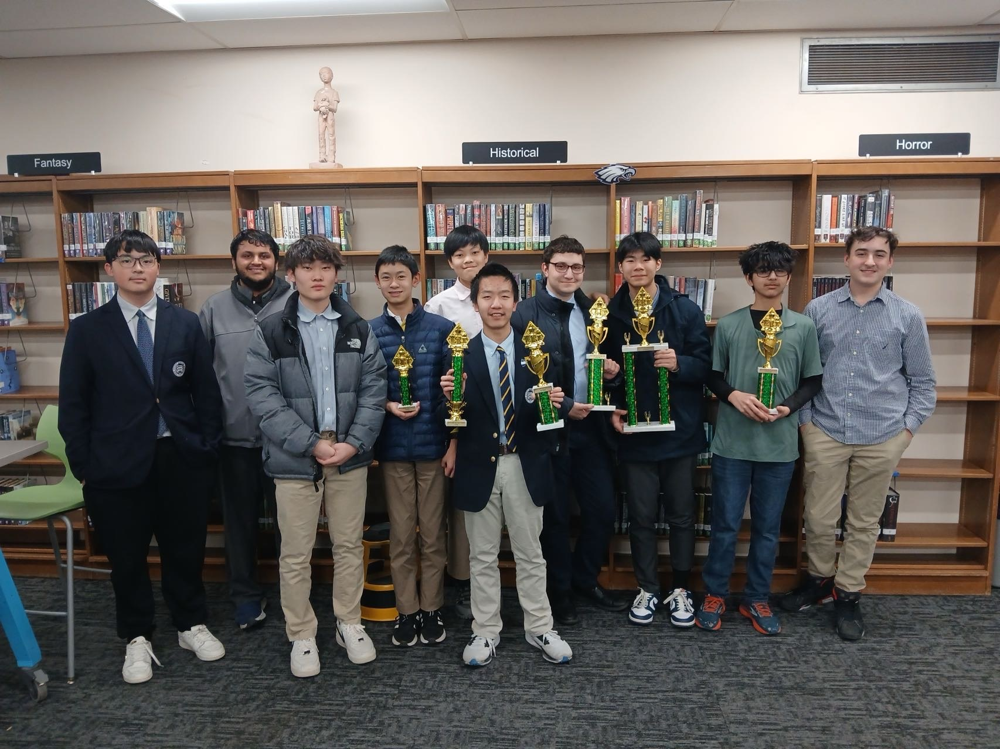

ENGAGEMENT ET RESPONSABILITÉS
Être présent pour les autres.
Je m’investis aussi dans la vie collective : à l’école, dans les cours de langue et à travers des initiatives bénévoles menées par des élèves.
CULTURE ET LIENS
Association des étudiants asiatiques
Président · 12e année
Je dirige un bureau de 10 personnes et une association de plus de 30 membres. Nos six événements culturels ont permis de recueillir plus de 2 000 dollars pour les activités de l’association. Ces rencontres réunissent notre communauté autour de repas, d’échanges et de traditions partagées.

NOTRE COMMUNAUTÉ
Se retrouver.
Une photo de notre communauté chinoise, pour célébrer les liens et les traditions que nous partageons à l’école.

MARCHÉ DE NUIT ASIATIQUE
Un repas qui fait avancer nos projets.
Pour notre marché de nuit asiatique, nous cuisinons pour toute la communauté et vendons les plats afin de financer de futurs événements. Partager un repas devient une manière de célébrer la culture et de préparer la prochaine rencontre.
CULTURE ET LIENS
Accompagnement des élèves chinois
En tant que responsable des élèves chinois, j’accompagne plus de 100 élèves, transmets des informations scolaires aux parents et contribue à la mise à jour du guide de l’école en chinois.
BÉNÉVOLAT ET ÉDUCATION
Prévention des blessures sportives chez les jeunes
Coresponsable · De la 9e à la 11e année
J’ai codirigé une initiative qui a recueilli environ 5 000 dollars pour du matériel de protection, établi un partenariat avec deux clubs de football à Arusha, en Tanzanie, et collaboré avec des professionnels de santé pour produire des ressources de prévention des blessures.
Ces photos ont été prises lors de notre présentation finale au Public Benefit International Challenge for Youth (PBIC) 2024.

PBIC 2024 / PRÉSENTATION FINALE
Partager notre travail.
Lors de la présentation finale, nous expliquons à une journaliste le travail de notre équipe sur la santé sportive des jeunes et la prévention des blessures.

NOTRE ÉQUIPE
Un effort collectif.
Notre équipe avec la bannière Healing Horizon Sports Health lors de la finale du PBIC 2024, en souvenir du travail présenté à cette occasion.
BÉNÉVOLAT ET ÉDUCATION
Programme d’enseignement du chinois
Assistant d’enseignement · Depuis la 9e année
J’aide à animer des cours de langue et de culture chinoises deux fois par mois pour une vingtaine d’élèves du primaire au Center for Chinese Learning at Stony Brook.

ACTIVITÉS EN CLASSE
La créativité en classe.
Un moment en classe où les élèves présentent leurs sacs sur le thème d’Halloween. Ces activités communes apportent une dimension ludique et pratique à nos séances.

CÉLÉBRATION DES FÊTES
Célébrer ensemble.
Une fête avec la classe, des décorations et des vœux en chinois au tableau : une nouvelle occasion de partager la langue, la culture et le sentiment d’appartenance à une communauté.
RESPONSABILITÉS ÉTUDIANTES ET ESPRIT D’ÉQUIPE
Club d’e-sport
Vice-président
En tant que vice-président, j’organise des tournois et contribue aux échanges sur la stratégie, le travail d’équipe et le développement des compétences au sein d’un club de plus de 30 membres.
Voir les diapositives Bear Tank (PDF en anglais) ↗

DÉCOUVRIR LE CLUB
Un lieu pour jouer et se rencontrer.
Notre stand rassemble ordinateurs portables, photos et pancarte colorée pour présenter le club d’e-sport à la communauté scolaire.

COMPÉTITION
Champions SPL · Valorant
Le trophée de Valorant du club porte les inscriptions « SPL Champions » et « Continue to win ». Il rappelle le travail d’équipe qui rend la compétition possible.
Échecs et bénévolat à l’école
J’ai aidé l’équipe d’échecs de l’école à remporter le championnat par équipes du comté de Suffolk en 9e et 10e année. Je suis aussi guide pour les visites d’admission et j’encadre 20 élèves lors du service hebdomadaire en cuisine.

EN PLEINE PARTIE
Devant l’échiquier.
Je suis à droite, avec le pull gris clair.

CHAMPIONNAT PAR ÉQUIPES
Champions du comté de Suffolk.
Notre équipe d’échecs après sa victoire au championnat par équipes du comté de Suffolk.